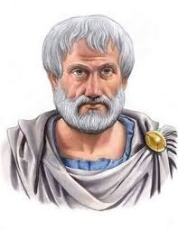

Aristoteles

Aristóteles nació en Estagira, en Tracia, el año 384-3 a. C., según Diógenes Laercio, quien nos dice que era hijo de Nicómaco y Efestiada, y que su padre ejercía la medicina en la corte del rey Amintas (II) de Macedonia, "por causa de la medicina y por amistad", lo que se ha tratado de asociar con el posterior interés naturalista de Aristóteles. Diógenes Laercio nos describe a Aristóteles como "el discípulo más legítimo de Platón, y de voz balbuciente... que tenía las piernas delgadas y los ojos pequeños, que usaba vestidos preciosos y anillos, y que se cortaba la barba y el pelo". (Vidas de filósofos ilustres, libro V, 1).
Aristóteles en la Academia
Poco sabemos de la educación recibida por Aristóteles en su juventud, aunque debió ser la propia de los jóvenes griegos de su época. A los diecisiete años, el 368 a. C., se trasladó a Atenas donde se incorporó a la Academia de Platón en la que permanecería durante veinte años. A pesar de algunas anécdotas que se hacen eco de un supuesto enfrentamiento entre Platón y Aristóteles, antes de la muerte de aquél, es poco probable que tal enfrentamiento haya podido producirse, dado que todas las referencias que tenemos de Aristóteles hacia Platón hacen gala de un gran respeto y admiración hacia el maestro, pese a las discrepancias teóricas que luego llevaron a su separación doctrinal. El hecho de que la crítica contemporánea haya puesto de manifiesto el carácter histórico, evolutivo, de la obra aristotélica hace aún más insostenible dicha hipótesis. Sabemos que Aristóteles atravesó por una fase profundamente platónica antes de desarrollar sus propias concepciones filosóficas, asumiendo como propia, por ejemplo, la teoría de las Ideas de Platón, antes de haber procedido a su crítica, como claramente se pone de manifiesto en el diálogo aristotélico "Eudemo", una de sus obras de juventud.
A la muerte de Platón, en el - 347, Espeusipo, sobrino de Platón, se hizo cargo de la dirección de la Academia, bien por designación directa de éste o bien por decisión de sus condiscípulos, imprimiendo una orientación de carácter místico-religioso a las actividades de la Academia, lo que no fue del agrado de Aristóteles, quien la abandonó (ya fuera por esta razón, ya por sentirse frustrado al no haber sido designado él mismo como director, como sostienen otros biógrafos).
Aristóteles tras el abandono de la Academia
Aristóteles se dirigió entonces, en compañía de Jenócrates, a Assos, donde reinaba el tirano Hermias (con quien, al parecer, entabló profunda amistad) fundando allí una sección de la Academia que él mismo dirigió durante tres años. Fue allí probablemente donde comenzó a desarrollar sus propias opiniones contrarias a la teoría de las Ideas. De esta época es, en efecto, su obra "Sobre la filosofía", en la que aparecen los primeros elementos críticos de la teoría de las Ideas. También allí contrajo matrimonio con Pythia, hija adoptiva o sobrina de Hermias, con la que llevó una vida feliz hasta la muerte de ésta. Se desconoce cuando tuvo lugar este acontecimiento, pero sabemos que Aristóteles tras la muerte de Pythia vivió con Herpilis, con la que tuvo un hijo llamado Nicómaco.
Tres años después, en el 345-4, se trasladó a Mitilene, en la isla de Lesbos, entrando allí probablemente en relación con Teofrasto, que sería posteriormente el más destacado discípulo y continuador de la obra de Aristóteles. Allí siguió con su actividad filosófica hasta que en el año 343-2 fue llamado por Filipo de Macedonia para hacerse cargo de la educación de su hijo Alejandro, el futuro Alejandro Magno, que tenía entonces trece años. Probablemente dicho encargo se debiera más a la amistad y parentesco con Hermias, aliado de Filipo, y asesinado hacía poco mediante una trampa tendida por los persas, que al pasado de su familia en la corte de Macedonia. Allí permaneció siete u ocho años, hasta el 336-5, cuando Alejandro subió al trono, regresando entonces Aristóteles a Atenas.
Regreso a Atenas y creación del Liceo
Una vez en Atenas, en el 335, fundará su propia escuela, el Liceo, una comunidad filosófica al estilo de la platónica , llamada así por estar situada dentro de un recinto dedicado a Apolo Likeios. Además del propio edificio contaba con un jardín y un paseo (perípatos) del que los aristotélicos recibirán el nombre de peripatéticos, ya sea porque Aristóteles impartiera sus enseñanzas paseando, como recoge Diógenes Laercio ("... tomó en el Liceo un sitio para pasear, y paseando allí hasta la hora de ungirse los atletas, filosofaba con sus discípulos, y de este paseo fue llamado peripatético"), o porque, simplemente, se impartieran dichas enseñanzas en el paseo. (Excavaciones realizadas a mediados de los 90 en Atenas, cerca de la la Plaza Sintagma, dejaron al descubierto los cimientos de varios edificios, como se puede observar en la imagen, que los arqueólogos consideran pueden ser los restos del Liceo de Aristóteles). Según la tradición el orden de las actividades en el Liceo estaba fuertemente establecido, dedicándose las mañanas a las cuestiones más difíciles de carácter filosófico, reservadas para los discípulos, y las tardes a las lecciones de retórica y de dialéctica, entre las que se podía encontrar un público más amplio.
A lo largo de este período Alejandro Magno realiza sus campañas militares que tienen como una de sus consecuencias la unificación de la Hélade, con la consiguiente pérdida de autonomía política de las ciudades estado, entre las que se contaba Atenas. El hecho de que Aristóteles hubiera sido su preceptor, así como su amistad y parentesco con Hermias, le irá convirtiendo en un personaje no grato para muchos atenienses. A la muerte de Alejandro, en el año 323, sintiéndose amenazado por los crecientes sentimientos antimacedónicos, Aristóteles abandonará Atenas y se retirará a Calcis ("para que los atenienses no vuelvan a pecar contra la filosofía", dicen que dijo, en clara referencia a la condena de Sócrates) a una propiedad de su difunta madre, en la isla de Eubea, de donde era originaria. Allí morirá Aristóteles, el 322 a. C., de una enfermedad del estómago.
Filosofia de aristoteles
 Para Aristóteles, la ciencia es el conocimiento de la causa de una cosa y la filosofía es la ciencia de las primeras causas y principios. Recoge de Platón su idea acerca de la filosofía como el conocimiento de las esencias de las cosas, de lo que es inmutable, universal y eterno pero, a diferencia de su maestro, considera que las esencias no pueden estar separadas de las cosas (en el mundo de las Ideas), sino que deben estar en las cosas mismas. Así, frente al idealismo platónico, Aristóteles puso los fundamentos gnoseológicos del realismo al revalorizar la experiencia sensible como punto de partida del conocer y de la ciencia, combinándola con una firme confianza en el poder universalizador de la razón. Aristóteles llega a los conceptos, ideas o "universales" por medio de la observación del mundo real y la función abstractiva de la mente humana: la labor de la inteligencia consiste en abstraer de los objetos singulares que nos presentan los sentidos, las notas o cualidades individuales hasta llegar al elemento común que es precisamente la esencia o naturaleza de cada ente. Éste es el fundamento gnoseológico del realismo filosófico.
Aristóteles distingue diferentes tipos de conocimiento que constituyen diversos modos de saber. Hay un conocimiento puramente sensitivo que, cuando es organizado por la memoria (sentido interno), constituye lo que denomina "experiencia". La experiencia es común al hombre y a los animales. Pero el hombre tiene, además, otros modos de saber: técnica, prudencia, ciencia, inteligencia y sabiduría. Por otra parte, divide la ciencia en especulativa, práctica y poiética. El fin de la ciencia especulativa es la verdad; el de la práctica, la acción; el de la poiética, la producción. La ciencia, en un sentido pleno, es la ciencia especulativa y se divide en Física, Matemática y Metafísica.
Estableció la primera doctrina lógica sistemática y, durante siglos, sus escritos de lógica dominaron la escolástica. En este sentido, concibió la "lógica" como un "instrumento" o disciplina propedéutica (o de preparación) para el mejor desarrollo del resto de las ciencias.
La física aristotélica parte de una serie de presupuestos básicos que adopta de la tradición filosófica anterior. También debemos tener en cuenta que para Aristóteles la física significaba tanto una ciencia empírica (semejante a las actuales ciencias naturales: biología, química, etc.) como lo que propiamente se denomina filosofía de la naturaleza. Distinguirá dos tipos de cambio o movimiento: el sustancial y el accidental. A partir de la experiencia del cambio sustancial inferirá la distinción entre la materia prima y la forma substancial (es lo que se conoce con el nombre de hilemorfismo o doctrina hilemórfica); mientras que el análisis de la experiencia del cambio accidental le llevará a distinguir entre la sustancia y sus accidentes. La aplicación de los conceptos de potencia y acto le permitirá resolver el problema acerca de la naturaleza del movimiento o devenir que tanto había preocupado a filósofos anteriores. Su posterior profundización acerca de los principios y leyes del movimiento se expresará en su doctrina acerca de la causalidad.
Aristóteles concibe la metafísica (que el denominaba "filosofía primera") como la más elevada de las ciencias especulativas, pues busca las primeras causas y los principios supremos de la realidad. Frente a la concepción unívoca del ser postulada por Parménides, Aristóteles introduce la noción del ente como "análogo". El término "ente" se dice comúnmente de todas las cosas, no en un mismo sentido (univocidad) pero tampoco en sentidos completamente diversos (equivocidad), sino en un cierto sentido o posición intermedia entre la univocidad y la equivocidad, que supone "algo en común" y que es lo que corresponde a la "analogía". Concretamente, Aristóteles distingue diez modos de ser que denomina "categorías" o "predicamentos". Estos diez géneros supremos o modos de clasificar la realidad son la sustancia y los nueve accidentes (cantidad, cualidad, relación, acción, pasión, tiempo, lugar, hábito o posesión, situación o estado).
Otro modo fundamental de ser es, para Aristóteles, el ser en acto y ser en potencia, que puede afectar a cualquiera de las categorías o predicamentos. Su doctrina acerca de la causalidad y el hilemorfismo, si bien son cuestiones que también son abordadas en sus tratados físicos, constituyen pilares sobre los que se fundamenta su metafísica. La ciencia metafísica de Aristóteles culmina en la teología, la cual se ocupa de Dios, es decir, del ser que existe per se, del ente en su sentido más pleno, la forma pura sin materia o Acto Puro.
Las aportaciones psicológicas del Estagirita han perdurado durante siglos, constituyendo el patrimonio común del pensamiento occidental en torno al hombre y al alma. Así, en lo que se refiere a su concepción antropológica, Aristóteles abandona el dualismo platónico y no consideró el alma como algo extraño al cuerpo, sino como su principio vital, unida a él sustancialmente y formando el compuesto natural humano. Rechazó la teoría platónica acerca de la metempsicosis o transmigración de las almas, así como su tesis acerca de la unión accidental entre cuerpo y alma, pero aceptará de Platón su consideración espiritualista, si bien su pensamiento resulta oscuro y ambiguo en lo que se refiere a la inmortalidad del alma.
Para Aristóteles, la ciencia es el conocimiento de la causa de una cosa y la filosofía es la ciencia de las primeras causas y principios. Recoge de Platón su idea acerca de la filosofía como el conocimiento de las esencias de las cosas, de lo que es inmutable, universal y eterno pero, a diferencia de su maestro, considera que las esencias no pueden estar separadas de las cosas (en el mundo de las Ideas), sino que deben estar en las cosas mismas. Así, frente al idealismo platónico, Aristóteles puso los fundamentos gnoseológicos del realismo al revalorizar la experiencia sensible como punto de partida del conocer y de la ciencia, combinándola con una firme confianza en el poder universalizador de la razón. Aristóteles llega a los conceptos, ideas o "universales" por medio de la observación del mundo real y la función abstractiva de la mente humana: la labor de la inteligencia consiste en abstraer de los objetos singulares que nos presentan los sentidos, las notas o cualidades individuales hasta llegar al elemento común que es precisamente la esencia o naturaleza de cada ente. Éste es el fundamento gnoseológico del realismo filosófico.
Aristóteles distingue diferentes tipos de conocimiento que constituyen diversos modos de saber. Hay un conocimiento puramente sensitivo que, cuando es organizado por la memoria (sentido interno), constituye lo que denomina "experiencia". La experiencia es común al hombre y a los animales. Pero el hombre tiene, además, otros modos de saber: técnica, prudencia, ciencia, inteligencia y sabiduría. Por otra parte, divide la ciencia en especulativa, práctica y poiética. El fin de la ciencia especulativa es la verdad; el de la práctica, la acción; el de la poiética, la producción. La ciencia, en un sentido pleno, es la ciencia especulativa y se divide en Física, Matemática y Metafísica.
Estableció la primera doctrina lógica sistemática y, durante siglos, sus escritos de lógica dominaron la escolástica. En este sentido, concibió la "lógica" como un "instrumento" o disciplina propedéutica (o de preparación) para el mejor desarrollo del resto de las ciencias.
La física aristotélica parte de una serie de presupuestos básicos que adopta de la tradición filosófica anterior. También debemos tener en cuenta que para Aristóteles la física significaba tanto una ciencia empírica (semejante a las actuales ciencias naturales: biología, química, etc.) como lo que propiamente se denomina filosofía de la naturaleza. Distinguirá dos tipos de cambio o movimiento: el sustancial y el accidental. A partir de la experiencia del cambio sustancial inferirá la distinción entre la materia prima y la forma substancial (es lo que se conoce con el nombre de hilemorfismo o doctrina hilemórfica); mientras que el análisis de la experiencia del cambio accidental le llevará a distinguir entre la sustancia y sus accidentes. La aplicación de los conceptos de potencia y acto le permitirá resolver el problema acerca de la naturaleza del movimiento o devenir que tanto había preocupado a filósofos anteriores. Su posterior profundización acerca de los principios y leyes del movimiento se expresará en su doctrina acerca de la causalidad.
Aristóteles concibe la metafísica (que el denominaba "filosofía primera") como la más elevada de las ciencias especulativas, pues busca las primeras causas y los principios supremos de la realidad. Frente a la concepción unívoca del ser postulada por Parménides, Aristóteles introduce la noción del ente como "análogo". El término "ente" se dice comúnmente de todas las cosas, no en un mismo sentido (univocidad) pero tampoco en sentidos completamente diversos (equivocidad), sino en un cierto sentido o posición intermedia entre la univocidad y la equivocidad, que supone "algo en común" y que es lo que corresponde a la "analogía". Concretamente, Aristóteles distingue diez modos de ser que denomina "categorías" o "predicamentos". Estos diez géneros supremos o modos de clasificar la realidad son la sustancia y los nueve accidentes (cantidad, cualidad, relación, acción, pasión, tiempo, lugar, hábito o posesión, situación o estado).
Otro modo fundamental de ser es, para Aristóteles, el ser en acto y ser en potencia, que puede afectar a cualquiera de las categorías o predicamentos. Su doctrina acerca de la causalidad y el hilemorfismo, si bien son cuestiones que también son abordadas en sus tratados físicos, constituyen pilares sobre los que se fundamenta su metafísica. La ciencia metafísica de Aristóteles culmina en la teología, la cual se ocupa de Dios, es decir, del ser que existe per se, del ente en su sentido más pleno, la forma pura sin materia o Acto Puro.
Las aportaciones psicológicas del Estagirita han perdurado durante siglos, constituyendo el patrimonio común del pensamiento occidental en torno al hombre y al alma. Así, en lo que se refiere a su concepción antropológica, Aristóteles abandona el dualismo platónico y no consideró el alma como algo extraño al cuerpo, sino como su principio vital, unida a él sustancialmente y formando el compuesto natural humano. Rechazó la teoría platónica acerca de la metempsicosis o transmigración de las almas, así como su tesis acerca de la unión accidental entre cuerpo y alma, pero aceptará de Platón su consideración espiritualista, si bien su pensamiento resulta oscuro y ambiguo en lo que se refiere a la inmortalidad del alma.
Conclusiones
Si Platón hablaba de la existencia de dos dimensiones distintas de la realidad, el mundo sensible y el mundo inteligible, de las ideas, Aristóteles apostó por la idea de que el mundo es solamente uno, sin compartimentos. La crítica a la teoría de las ideas será un punto clave de su filosofía.
En la actualidad sus ideas son para las personas la perspectiva de su vida, es decir que ellos son dueños de su destino y aunque existan dos partes de él, cada quien escoge si ser ignorante o solo pensar